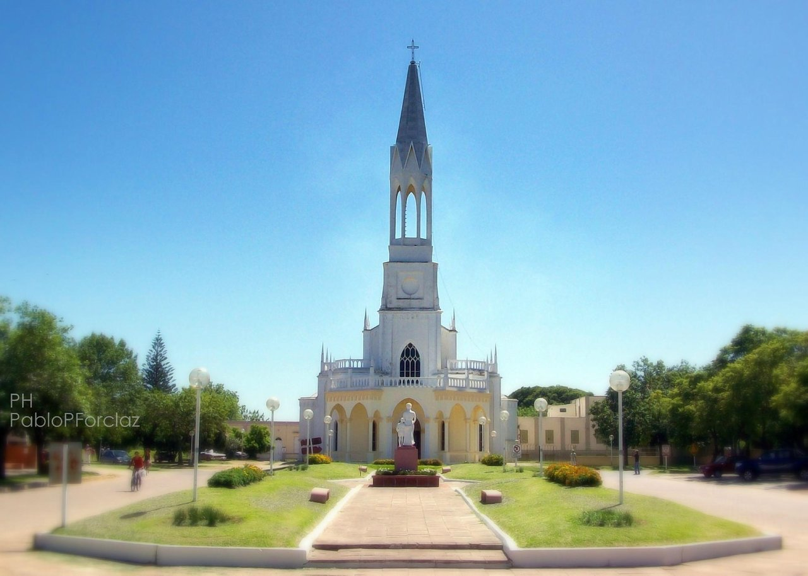

Nuestra Misión
En la búsqueda de un equilibrio sostenible entre la naturaleza y la sociedad, surge El Rocha ONG con el objetivo claro de establecer un Área Natural Protegida en la pintoresca localidad de Villa Elisa. Nos esforzamos por crear un espacio donde la flora y fauna puedan prosperar sin la interferencia perjudicial del ser humano.
Objetivos del Proyecto
Área Natural Protegida en Villa Elisa: Buscamos establecer un refugio para la vida silvestre, un oasis donde la biodiversidad pueda florecer sin amenazas externas.
Desarrollo Sostenible: Entendemos que proteger nuestro entorno es clave para el desarrollo sostenible. Queremos no solo preservar el equilibrio ecológico sino también fomentar nuevas actividades económicas y socioculturales en la localidad.
Contexto Ambiental
El enfoque que hemos adoptado se basa en un análisis profundo de las Áreas Naturales Protegidas. Observamos la necesidad urgente de establecer normativas que protejan nuestros ecosistemas frente a la expansión de la frontera agrícola y otros desequilibrios ambientales.
Desafíos Actuales
Modelo Productivo Actual: Reconocemos que el modelo productivo actual ha generado desequilibrios ambientales significativos. Estamos comprometidos a revertir estos efectos negativos.
Impacto en Sociedades: Comprendemos que estos desequilibrios afectan no solo al medio ambiente, sino también a las comunidades locales. Buscamos soluciones que beneficien a ambas partes.
Visión a Futuro
Creemos en un futuro donde la conservación ambiental y el desarrollo humano armonicen. A través de propuestas educativas innovadoras y transformadoras, buscamos cambiar la narrativa y construir una coexistencia sostenible entre la naturaleza y la sociedad.
Únete a nosotros en esta emocionante jornada hacia un equilibrio sostenible. Juntos, podemos construir un futuro donde la naturaleza florezca y las comunidades prosperen.
